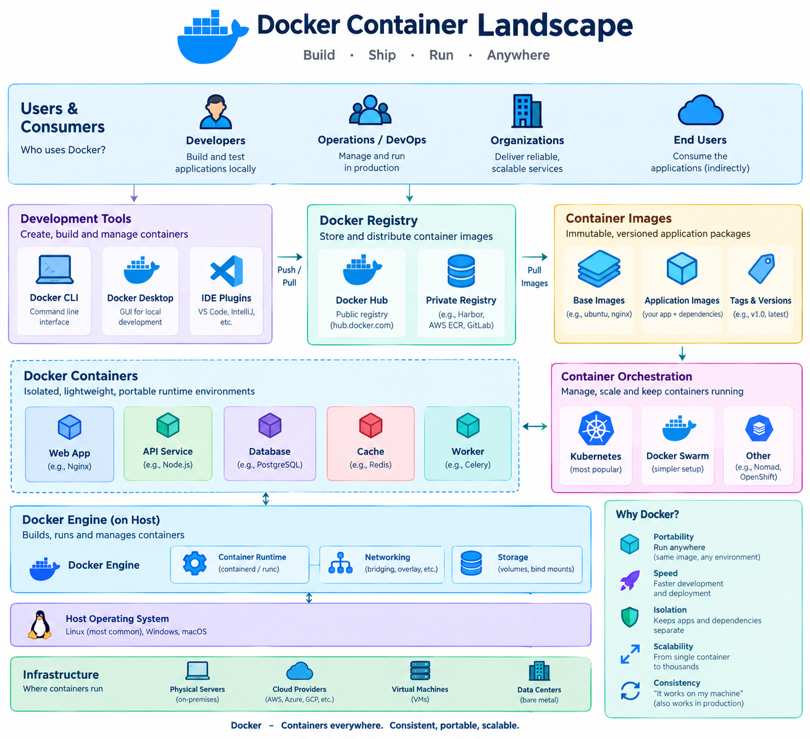

Introduction to Containers¶
Learning Objectives¶
Why this matters
By the end of this chapter, participants will be able to: - Define containerization and explain how it differs from traditional virtualization. - Understand the core components of the container ecosystem: Image, Registry, and Runtime. - Analyze the container lifecycle: Build \(\rightarrow\) Ship \(\rightarrow\) Run. - Identify the critical role of containers in ensuring reproducibility for AI and Data Science workloads. - Distinguish between the shared-kernel model of containers and the hypervisor model of Virtual Machines. - Explain the technical mechanisms of Linux Namespaces and Cgroups that enable container isolation.
Prerequisites¶
To get the most out of this chapter, we recommend the following foundational knowledge:
- Basic Linux CLI: Comfort with the terminal, including navigating directories (
cd,ls), managing files (cp,mv,rm), and basic permissions (chmod,chown). - Environment Variables: Understanding how
exportand.bashrcwork. - Basic Networking: A conceptual understanding of IP addresses, ports, and how a client communicates with a server via HTTP.
- Python Basics: Familiarity with how Python packages are installed (e.g.,
pip) and the concept of virtual environments.
Overview¶
In the early days of cloud computing, the primary unit of isolation was the Virtual Machine (VM). While VMs provided strong isolation, they were "heavy"—each requiring its own full guest operating system, which consumed significant memory and CPU resources even before the application started.
Containerization represents a fundamental shift in how we package and deploy software. Instead of virtualizing the hardware, containers virtualize the operating system. This allows multiple isolated applications to share the same OS kernel while maintaining their own filesystem, libraries, and configurations.
Why this matters
For AI researchers and Data Scientists, "it works on my machine" is a frequent and costly failure. A model that trains perfectly on a local workstation with a same version of CUDA, PyTorch, and a set of system libraries often fails when moved to a GPU cluster or a production cloud environment. Containers solve this by packaging the entire environment—not just the code—ensuring that the environment in production is an exact replica of the environment used during development.
Case Study: The History of Containerization¶
Containerization didn't appear overnight; it was the result of decades of evolution in the Linux kernel. Each stage represented a technical "leap" that solved a specific problem of isolation and portability.
1. The Filesystem Leap: chroot (1979)¶
Introduced in 1979, chroot (change root) provided the first primitive for filesystem isolation. It allowed a process to see a specific directory as its root (/), preventing it from accessing files outside that path.
- The Technical Leap: Moving from a global filesystem to a restricted view.
- The Limitation:
chrootonly isolated the filesystem. The process could still see all other processes on the host, use the same network stack, and potentially "break out" of the jail if it had root privileges.
Why this matters
In the context of AI, chroot is analogous to creating a dedicated project folder. It keeps your files organized, but it does nothing to prevent a library version conflict at the system level.
2. The Kernel Leap: LXC (2008)¶
Linux Containers (LXC) emerged by combining two powerful kernel features: Namespaces and Cgroups. This shifted isolation from just the filesystem to the entire operating system environment.
- The Technical Leap:
- Namespaces: Isolated the "view" of the system (PIDs, Network, Mounts).
- Cgroups: Isolated the "usage" of the system (CPU, Memory).
- The Limitation: While LXC provided a "full system" container, it lacked a standard way to package and distribute those containers. Moving an LXC container from one server to another was a manual, error-prone process.
Why this matters
LXC solved the isolation problem but not the distribution problem. For a data scientist, this was like having a perfectly configured virtual environment on a local machine, but having to manually recreate it—line by line—on a remote GPU cluster.
3. The Portability Leap: Docker (2013)¶
Launched in 2013, Docker didn't invent containers—it made them usable for developers. Docker's breakthrough was the introduction of the Container Image and the layered filesystem (UnionFS).
- The Technical Leap: The shift from "configuring a container" to "shipping an image." By defining an immutable, layered blueprint, Docker ensured that the exact same bytes were executed regardless of where the image was run.
- The Impact: Docker transformed containers from a system administration tool into a developer tool, enabling the "Build \(\rightarrow\) Ship \(\rightarrow\) Run" workflow.
Why this matters
This is the "killer app" for AI reproducibility. GPU clusters are notoriously fragile; a mismatch between the NVIDIA driver, the CUDA toolkit, and the PyTorch binaries can lead to cryptic crashes. Immutable images eliminate the "it works on my machine" problem by packaging the entire software stack into a single, versioned artifact.
Implementation¶
Containers vs. Virtual Machines¶
To understand containers, we must first understand what they are not. While both provide isolation, they do so at different layers of the system stack.
The Architectural Difference¶
A Virtual Machine (VM) uses a hypervisor to create a virtualized version of the hardware. Each VM runs a complete "Guest OS," which includes its own kernel.
A Container leverages the host's Linux kernel using primitives called Namespaces (for isolation) and Cgroups (for resource limiting). There is no guest OS; the container is essentially an isolated process sharing the host's kernel.
| Feature | Virtual Machines (VMs) | Containers |
|---|---|---|
| Isolation | Hardware-level (Hypervisor) | OS-level (Kernel Namespaces) |
| Guest OS | Full OS for every instance | Shared Host OS Kernel |
| Startup Time | Minutes (booting an OS) | Milliseconds (starting a process) |
| Resource Usage | High (Memory/CPU overhead) | Low (Near-native performance) |
| Portability | Large images (GBs) | Small images (MBs to GBs) |
| Security | Strong (Hardware boundary) | Moderate (Kernel boundary) |
When to use which?
Use VMs when you need to run multiple different operating systems on one host (e.g., Windows on Linux) or when absolute security isolation is required. Use Containers for microservices, CI/CD pipelines, and AI workloads where speed, density, and reproducibility are paramount.
Technical Deep Dive: How Containers Actually Work¶
Containers are not "real" objects in the Linux kernel; they are an abstraction created by combining two key features:
1. Linux Namespaces (The "What I can see" boundary)
Namespaces wrap global system resources in an abstraction that makes it appear to the process within the namespace that it has its own isolated instance of the resource.
- PID Namespace: The container has its own process tree. Process ID 1 inside the container is not PID 1 on the host.
- NET Namespace: The container has its own virtual network stack, including IP addresses, routing tables, and port mappings.
- MNT Namespace: The container has its own mount points, meaning it cannot see the host's root filesystem unless explicitly permitted.
- UTS Namespace: Allows the container to have its own hostname.
2. Control Groups / cgroups (The "How much I can use" boundary)
While Namespaces provide isolation, cgroups provide resource metering and limiting. They ensure that a single container cannot crash the entire host by consuming all available resources.
- CPU Limiting: Ensures a container only uses a specific percentage of the CPU.
- Memory Limiting: Prevents a container from exceeding its allocated RAM, triggering an OOM (Out of Memory) kill if it does.
- Block I/O: Limits the disk read/write speed to prevent "noisy neighbor" syndrome.
The Container Lifecycle¶
The movement of software from a developer's laptop to a production cluster follows a consistent three-stage lifecycle: Build, Ship, and Run.
1. Build (The Image)¶
The process begins with a Dockerfile (or similar recipe). This text file defines the environment: the base OS, the dependencies to install, the environment variables to set, and the command to execute. When this file is "built," it creates a Container Image.
- Image: A read-only template containing the application and everything it needs to run. It is composed of stacked layers to maximize reuse.
Layer Caching
Docker and Podman cache each line of the Dockerfile. To speed up builds, always place instructions that change frequently (like COPY . .) after instructions that change rarely (like apt-get install).
2. Ship (The Registry)¶
Once an image is built, it needs to be stored and shared. This is where the Container Registry comes in (e.g., Docker Hub, GitHub Container Registry, or a private corporate registry).
- Registry: A centralized repository for storing and distributing container images. Developers "push" images to the registry and orchestration systems "pull" them down to deploy.
3. Run (The Container)¶
The final stage occurs when a container runtime (like containerd or CRI-O) takes an image from the registry and instantiates it.
- Container: A running instance of an image. While the image is static and read-only, the container adds a thin "writable layer" on top, allowing the application to write logs or temporary files during execution.


Figure 1: The Build \(\rightarrow\) Ship \(\rightarrow\) Run workflow.
Reproducibility in the AI Stack¶
Containers are especially effective when dealing with the complex dependencies of AI workloads. A typical AI container manages:
- System Libraries: Specific versions of glibc or BLAS.
- GPU Runtimes: CUDA and cuDNN versions that must match the physical GPU driver (see AI Containers).
- Language Environments: Python versions and virtual environments.
- Model Weights: Large binary files that can be baked into the image or mounted as volumes.
Real-World AI Scenario: The CUDA Mismatch
Imagine a researcher develops a transformer model using PyTorch 2.1 and CUDA 12.1 on their local RTX 4090. They send the code and a requirements.txt to a colleague who has CUDA 11.8 installed on their A100 cluster. Despite having the same Python packages, the code crashes with a RuntimeError: CUDA error: invalid device function because the compiled binaries in PyTorch were built for a newer CUDA toolkit.
By providing a Container Image, the researcher packages the exact CUDA toolkit and cuDNN libraries. The colleague simply runs the container, and the model executes perfectly, regardless of the host's installed CUDA version (provided the host driver is compatible).
::: warning "The GPU Driver Exception" Containers package the CUDA Toolkit (libraries), but they cannot package the NVIDIA Kernel Driver. The host machine must still have a compatible NVIDIA driver installed for the container to access the GPU. :::
Common Pitfalls in Containerization¶
Before diving into the tools, be aware of these frequent mistakes:
- The 'Fat Image' Problem: Including build tools (like
gccorgit) in the final production image. This increases the attack surface and image size. (Solution: Multi-stage builds). - Storing State in the Container: Writing data to the container's writable layer. When the container is deleted, that data is gone forever. (Solution: Volumes/Bind Mounts).
- The
:latestTag Trap: Usingimage:latestin production. If a new version of the image is pushed to the registry, your application may automatically update to a breaking version during a restart. (Solution: Pin specific versions, e.g.,image:v1.2.3).
Chapter Roadmap: Containerization and Orchestration¶
To master this ecosystem, we will progress through the following sequence:
Part I: Foundations of Containerization¶
- Introduction to Containers (
containers.md): The core philosophy and lifecycle. - Container Tool Comparison (
container-tool-comparison.md): Choosing the right engine. - Docker (
docker.md): The industry standard for building images. - Podman (
podman.md): Rootless and daemonless containers. - Apptainer (
apptainer.md): Specialized containers for HPC.
Part II: Container Orchestration¶
- Orchestration Landscape (
orchestration-comparison.md): The transition from single containers to clusters. - Kubernetes (
kubernetes.md): Architecture and core primitives. - Local K8s (
kubernetes-local.md): Development with Minikube and Kind. - Advanced Scaling (
kubernetes-advanced/hpa-autoscaling.md): Auto-scaling for dynamic workloads. - Helm (
helm.md): Managing applications as packages.
Part III: Enterprise Platforms¶
- OpenStack Integration (
openshift.md): Enterprise-grade Kubernetes. - OpenStack Integration (
openstack.md): Containers in the IaaS layer.
Summary Checklist¶
- [ ] Distinguish between hardware virtualization (VMs) and OS virtualization (Containers).
- [ ] Explain how Linux Namespaces and Cgroups enable container isolation.
- [ ] Identify the three stages of the container lifecycle: Build, Ship, and Run.
- [ ] Explain the difference between a Container Image (static) and a Container (running instance).
- [ ] Describe the role of a Container Registry in the "Ship" phase.
- [ ] Articulate why containers are critical for reproducibility in GPU-accelerated AI workloads.
- [ ] Identify the risk of using the
:latesttag in production.
Assignments¶
Assignment.1: Analyzing an Image
Find a public image on Docker Hub for a tool you use (e.g., pytorch/pytorch or tensorflow/tensorflow). Inspect its tags and description. Try to determine which base OS it uses and what CUDA version it supports.
Solution: Analyzing an Image
Look for the "Tags" tab on Docker Hub. Tags often include the OS (e.g., -ubuntu22.04) and the CUDA version (e.g., -cuda12.1). You can also check the Dockerfile if it is linked in the repository to see the FROM instruction.
Assignment.2: Mapping the Lifecycle
Draw a diagram of your current development-to-deployment workflow. Identify where "Build", "Ship", and "Run" occur. If you aren't using containers, identify one point where an environment mismatch has caused a bug and explain how a container would have prevented it.
Solution: Mapping the Lifecycle
Build: Where the code is compiled or packaged (e.g., local machine, CI runner). Ship: Where the artifact is stored (e.g., Artifactory, Docker Hub, S3). Run: Where the application executes (e.g., Production server, Kubernetes Pod). Prevention: A container would prevent mismatches by including the specific library versions in the image, ensuring the "Run" environment is identical to the "Build" environment.
Self-Evaluation¶
Self-Assessment
Test your knowledge by expanding the questions below.
What is the fundamental difference between a VM and a Container?
A VM virtualizes the hardware, requiring a full guest OS for every instance. A container virtualizes the operating system, sharing the host's kernel and making it significantly more lightweight and faster to start.
Explain the relationship between an Image and a Container.
An image is a read-only template (the "blueprint") containing the application and its dependencies. A container is a running instance of that image (the "building"), adding a writable layer on top of the read-only image.
Why is the 'Build \(\rightarrow\) Ship \(\rightarrow\) Run' workflow important for reproducibility?
It ensures that the exact same artifact (the image) created during the build phase is the one shipped to the registry and subsequently run in production, removing any variance between environments.
How do containers help in AI research specifically?
AI workloads depend on a fragile combination of GPU drivers, CUDA versions, and Python libraries. Containers package these dependencies together, ensuring that a model developed on one machine will behave identically on a remote GPU cluster.
Why is using the :latest tag considered a bad practice in production?
The :latest tag is a pointer that can change over time. If a new image is pushed as :latest, a restarted container will pull the new version, potentially introducing breaking changes or bugs into a stable production environment without warning.
Can a container package the host's GPU driver?
No. While a container can package the CUDA Toolkit and libraries, it cannot package the kernel-level NVIDIA driver. The host machine must still have a compatible NVIDIA driver installed for the containerized CUDA libraries to communicate with the hardware.
What is the primary advantage of the 'layered' filesystem in container images?
Layering allows Docker/Podman to reuse common base layers across multiple images. For example, if ten different AI images all use ubuntu:22.04 as their base, that layer is stored only once on disk, saving significant space and speeding up pulls.
How do Linux Namespaces and Cgroups work together to create a container?
Namespaces provide the isolation (making a process believe it has its own network, PID tree, and mount points), while Cgroups provide the resource control (limiting how much CPU and RAM that process can consume). Together, they create the boundaries of a container.
What's Next?¶
In the next chapter, we will dive into the industry standard for building and managing containers: Docker.